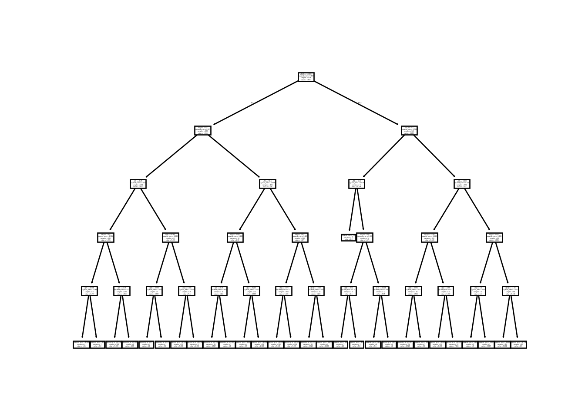

flowchart TB Income[ If Income >50K] Savings[Has Savings] NoSavings[No Savings] Income ==>|True|Savings Income ==>|False|NoSavings
What is a Regression Tree?
Among the lesser known and less common types of models is called a Regression Tree. A Regression Tree is actaully misnomer since it does not in fact use Regression at all when being built but instead uses something called the Standard Deviation Reduction. We’ll define that in a moment because even though all this is important, the ideas of this model is built around a Decision Tree - which requires us to step back even more.
What is a Decision Tree?
A Decision Tree is usually discussed as a sort of flow chart based on the test data being split on a set of features. Then, there is a calculation made - usually Entropy - to see which split generates a better model. Once the split has been made then you get two subtrees which further tries the same thing until the model is built. A very simple pretend example is:
The trees are usually much larger - as we’ll see in a moment. There is also a solid amount of customization which goes into a good Decision Tree - but that is not what we’re intending to work with today. Today, we’re going to look at how to make them in R and Python.
Regression Trees in R
So, we’ll be borrowing data from a wonderful book called Machine Learning In R by Brett Lantz which is an excellent read and reference. I strongly recommend his work since the videos and texts written by him do an excellent job of explaining these concepts. Anyways, first we get the data.
# You will need these libraries:
# install.packages(c('rpart', 'rsample', 'rpart.plot'))
library(tidyverse)── Attaching packages ─────────────────────────────────────── tidyverse 1.3.2 ──
✔ ggplot2 3.4.0 ✔ purrr 1.0.1
✔ tibble 3.1.8 ✔ dplyr 1.0.10
✔ tidyr 1.3.0 ✔ stringr 1.5.0
✔ readr 2.1.3 ✔ forcats 0.5.2
── Conflicts ────────────────────────────────────────── tidyverse_conflicts() ──
✖ dplyr::filter() masks stats::filter()
✖ dplyr::lag() masks stats::lag()wines = read_csv("https://github.com/stedy/Machine-Learning-with-R-datasets/raw/master/whitewines.csv");Rows: 4898 Columns: 12
── Column specification ────────────────────────────────────────────────────────
Delimiter: ","
dbl (12): fixed acidity, volatile acidity, citric acid, residual sugar, chlo...
ℹ Use `spec()` to retrieve the full column specification for this data.
ℹ Specify the column types or set `show_col_types = FALSE` to quiet this message.Once again, make sure that if you’re following along that you get those packages installed. This dataset is about judging wine and - as someone who does not drink - we’ll leave the judging to the judge data here.
One point I would like to comment on since I’ll be borrowing from the tidyverse here is that if you’re still doing manual training/testing splits then I recommend the rsample package. With this, you can split the model and access each in part using the functions testing() and training() to pull them out of the object. This means you wont have to manage them separatly which is a nice to have:
library(rpart)
library(rpart.plot)
library(rsample)
splits = initial_split(wines, prop = .8)Once we’ve got our split, then we can simply use the formula notation on our training data and check out the model:
model = rpart(quality ~ ., training(splits))
modeln= 3918
node), split, n, deviance, yval
* denotes terminal node
1) root 3918 3034.70300 5.876978
2) alcohol< 10.85 2486 1459.73800 5.613033
4) volatile acidity>=0.2425 1422 674.82210 5.391702
8) free sulfur dioxide< 17.5 197 98.95431 5.015228 *
9) free sulfur dioxide>=17.5 1225 543.45630 5.452245
18) alcohol< 10.25 992 382.50000 5.375000 *
19) alcohol>=10.25 233 129.83690 5.781116 *
5) volatile acidity< 0.2425 1064 622.15700 5.908835
10) volatile acidity>=0.2075 476 229.69750 5.739496 *
11) volatile acidity< 0.2075 588 367.76020 6.045918
22) residual sugar< 12.575 463 245.36930 5.911447 *
23) residual sugar>=12.575 125 83.00800 6.544000 *
3) alcohol>=10.85 1432 1101.10600 6.335196
6) free sulfur dioxide< 11.5 99 102.54550 5.454545 *
7) free sulfur dioxide>=11.5 1333 916.07950 6.400600
14) alcohol< 11.74167 647 432.85010 6.193199
28) volatile acidity>=0.48 7 4.00000 4.000000 *
29) volatile acidity< 0.48 640 394.81090 6.217188 *
15) alcohol>=11.74167 686 429.15010 6.596210 *The final results of the splits are marked with an * symbol and tell us which path gets us to the best rated quality wine. If you’re finding this a bit annoying to interpret then do not worry because there is a better way to represent these. These kinds of models are excellent when plotted so we’ll do that instead:
rpart.plot(model, digits=3, fallen.leaves = T)
There you go, the splits which end up with the best quality wines are alcohol > 11.88 and free sulfur dioxide > 11.5 for whatever that means. I hope someone reading this knows more about wine then I do and can interpret those values.
Regression Trees in Python
Doing this in Python is a little different but we’ll be back to using the scikit-learn package as it contains the models we’ll be after. The class is the DecisionTreeRegressor under sklearn.tree:
import pandas as pd
import matplotlib.pyplot as plt
from sklearn.model_selection import train_test_split
from sklearn.tree import DecisionTreeRegressor
data = pd.read_csv("https://github.com/stedy/Machine-Learning-with-R-datasets/raw/master/whitewines.csv")
y = data.quality
X = data.drop('quality', axis=1)
X_train, X_test, y_train, y_test = train_test_split(X, y, test_size=0.8, random_state=421)
model = DecisionTreeRegressor(random_state=421, max_depth=5)
model.fit(X_train, y_train);I set the max_depth lower to attempt to match the R version’s tree. If we try to plot the tree without then it is almost impossible to reason about. You can see this when we plot it using plot_tree from sklearn.tree:
from sklearn.tree import plot_tree, export_text
bigTree = DecisionTreeRegressor(random_state=421)
bigTree.fit(X_train, y_train);
plot_tree(bigTree)I know what I’m looking for and I cannot make out anything of value from this tree. This is better but the text is still mostly illegible:
plot_tree(model)
Thoughts
I find the python outputs to be frankily useless. Trying to fix the DPI and display is just not working in getting any meaning out of these so I definitely recommend R if you’re planning on using these models. They’re a bit niche and you’ll have to have purely numeric data but there are plenty of problems in the real world where that is the case. These would be a solid baseline model to start with and then try to find models which improve on it.
Also, an interesting difference between the Python version and the R version is the metrics are not the same. The R version uses something called Standard Deviation Reduction which tries to condition the split on minimizing the Standard Deviation. But, the Python documentations doesn’t even have that as a choice but defaults to squared error instead.